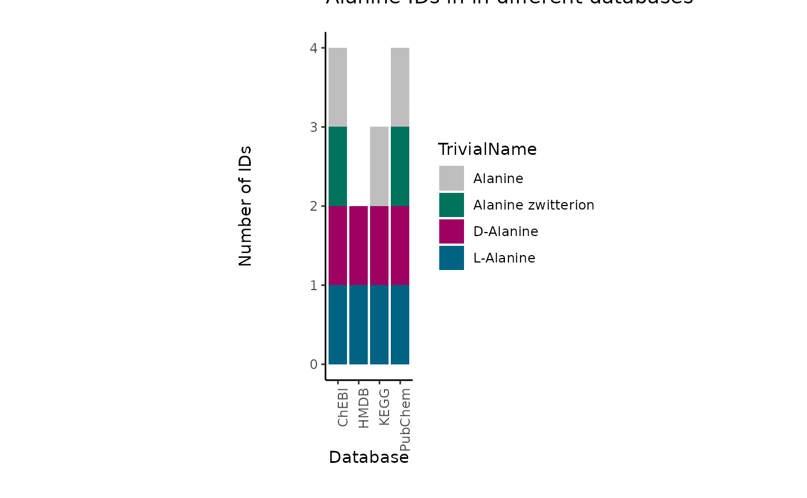
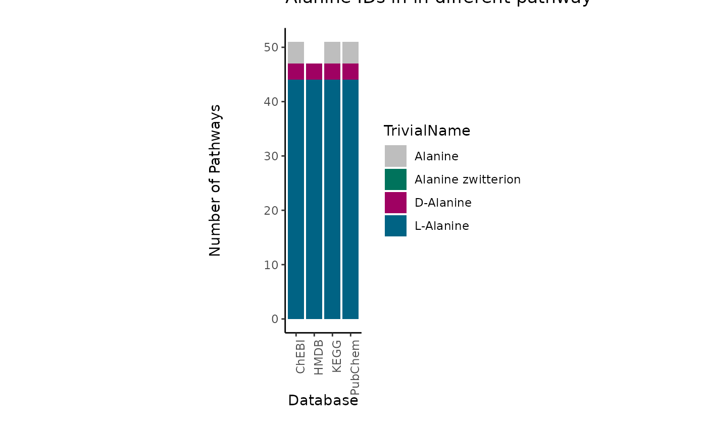

Enrichment Analysis
Christina Schmidt
Heidelberg UniversityMacabe Daley
Heidelberg UniversitySource:
vignettes/EnrichmentAnalysis.Rmd
EnrichmentAnalysis.Rmd
In this tutorial we showcase how
to use MetaProViz:
- To access metabolite prior knowledge.
- To deal with many-to-many mapping in your metabolite
identifiers.
- To perform pathway enrichment analysis.
First if you have not done yet, install the required dependencies and
load the libraries:
# 1. Install Rtools if you haven’t done this yet, using the appropriate version (e.g.windows or macOS).
# 2. Install the latest development version from GitHub using devtools
#devtools::install_github("https://github.com/saezlab/MetaProViz")
library(MetaProViz)
#> Error in get(paste0(generic, ".", class), envir = get_method_env()) :
#> object 'type_sum.accel' not found
#dependencies that need to be loaded:
library(magrittr)
library(dplyr)
library(tidyr)
#Please install the Biocmanager Dependencies:
#BiocManager::install("clusterProfiler")
#BiocManager::install("EnhancedVolcano")
#BiocManager::install("cosmosR")1. Loading the example data
As part of the
MetaProViz package you can load the example data into
your global environment using the function
toy_data():1.Cell line experiment (CellLine)
Here we choose an example datasets, which is publicly available on metabolomics
workbench project PR001418 including metabolic profiles of human
renal epithelial cells HK2 and cell renal cell carcinoma (ccRCC) cell
lines cultured in Plasmax cell culture media (Sciacovelli et al. 2022). The raw data are
available via metabolomics
workbench study ST002224 were intracellular metabolomics of HK2 and
ccRCC cell lines 786-O, 786-M1A and 786-M2A were performed.
We have performed pre-processing and differential analysis (details can
be found in the vignette vignette Standard
Metabolomics) and and here we load the differential metabolite
analysis results for the comparison of 786M-1A versus HK2.
#Load the Pre-processed intracellular data:
Intra_DMA_786M1A_vs_HK2<- MetaProViz::ToyData(Data="IntraCells_DMA")2. Tissue experiment (Tissue)
Here we chose publicly available data from the paper
“An Integrated Metabolic Atlas of Clear Cell Renal Cell Carcinoma”,
which includes metabolomic profiling on 138 matched clear cell renal
cell carcinoma (ccRCC)/normal tissue pairs.
We have performed differential analysis (details can be found in the
vignette Metadata
Analysis) and and here we load the differential metabolite analysis
results for the comparison of Tumour versus Normal.
# Load the example data:
Tissue_TvsN <- MetaProViz::ToyData(Data="Tissue_DMA")
Tissue_TvsN_Old <- MetaProViz::ToyData(Data="Tissue_DMA_Old")
Tissue_TvsN_Young <- MetaProViz::ToyData(Data="Tissue_DMA_Young")2. Accessing Prior Knowledge
Metabolite prior knowledge (PK) is essential for the interpretation of
metabolomics data. It can be used to perform pathway enrichment
analysis, compound class enrichment analysis, and by using specific PK
databases, it can be used to study the connection of metabolites and
receptors or transporters.Since the quality and content of the PK will
dictate the success of the downstream analysis and biological
interpretation, it is important to ensure the PK is used
correctly.
Specifically in metabolite PK, the many different PK databases and
resources pose several issues. Indeed, the metabolite identifiers
(e.g. KEGG, HMDB, PubChem, etc.) are not standardized across databases,
and the same metabolite can have multiple identifiers in different
databases. This is known as the many-to-many mapping problem.
Moreover, metabolic pathways that are the basis of the PK databases also
includes co-factors such as ions or other small molecules that are not
only part of most reactions, but can also not be detected in
experimentallly acquired data (e.g. H2O, CO2, etc).
KEGG pathway-metabolite sets
KEGG pathways that are loaded via KEGG API using the package
KEGGREST and can be used to perform pathway analysis (Kanehisa and Goto 2000).
(KEGG_Pathways)
#This will use KEGGREST to query the KEGG API to load the pathways:
MetaProViz::LoadKEGG()
#> Cached file loaded from: ~/.cache/KEGG_Metabolite.rds| term | Metabolite | MetaboliteID | Description | |
|---|---|---|---|---|
| 1 | Glycolysis / Gluconeogenesis - Homo sapiens (human) | Pyruvate | C00022 | Glycolysis / Gluconeogenesis - Homo sapiens (human) |
| 2 | Glycolysis / Gluconeogenesis - Homo sapiens (human) | Acetyl-CoA | C00024 | Glycolysis / Gluconeogenesis - Homo sapiens (human) |
| 3 | Glycolysis / Gluconeogenesis - Homo sapiens (human) | D-Glucose | C00031 | Glycolysis / Gluconeogenesis - Homo sapiens (human) |
| 52 | Pentose phosphate pathway - Homo sapiens (human) | Pyruvate | C00022 | Pentose phosphate pathway - Homo sapiens (human) |
| 53 | Pentose phosphate pathway - Homo sapiens (human) | D-Glucose | C00031 | Pentose phosphate pathway - Homo sapiens (human) |
| 54 | Pentose phosphate pathway - Homo sapiens (human) | D-Fructose 6-phosphate | C00085 | Pentose phosphate pathway - Homo sapiens (human) |
Create pathway-metabolite sets
The function Make_GeneMetabSet can be used to translate
gene names to metabolite names by using a PK network of metabolic
reactions calls CosmosR (Dugourd et al.
2021). This function is useful if you want to perform pathway
enrichment analysis on available gene-sets such as the Hallmarks
gene-sets from MSigDB (Castanza et al.
2022). Moreover, it enables you to perform combined pathway
enrichment analysis on metabolite-gene sets, if you have other data
types such as proteomics measuring the enzymes expression.
The Hallmarks gene-set is available in the package
MetaProViz and can be loaded using the function
LoadHallmarks().
#Load the example data:
MetaProViz::LoadHallmarks()| term | gene |
|---|---|
| HALLMARK_BILE_ACID_METABOLISM | GSTK1 |
| HALLMARK_BILE_ACID_METABOLISM | ABCG4 |
| HALLMARK_GLYCOLYSIS | LDHC |
| HALLMARK_GLYCOLYSIS | ARPP19 |
| HALLMARK_GLYCOLYSIS | LDHC |
| HALLMARK_GLYCOLYSIS | ARPP19 |
| HALLMARK_GLYCOLYSIS | CENPA |
Now we can use the function Make_GeneMetabSet to translate
the gene names to metabolite names.
#Translate gene names to metabolite names
Hallmarks_GeneMetab <- MetaProViz::Make_GeneMetabSet(Input_GeneSet=Hallmark_Pathways,
SettingsInfo=c(Target="gene"),
PKName="Hallmarks")| term | feature |
|---|---|
| HALLMARK_GLYCOLYSIS | ME2 |
| HALLMARK_GLYCOLYSIS | LDHC |
| HALLMARK_GLYCOLYSIS | FKBP4 |
| HALLMARK_GLYCOLYSIS | HMDB0000241 |
| HALLMARK_GLYCOLYSIS | HMDB0000570 |
| HALLMARK_GLYCOLYSIS | HMDB0000122 |
Given that we have the gene-metabolite-sets, we can now also run
enrichment analysis on combined data types, once including the
metabolite Log2FC and one including gene Log2FC from
e.g. transcriptomics or proteomics data. Yet, it is important to keep in
mind that generally we detect less metabolites than genes and hence this
may bias the results obtained from combined enrichment analysis.
MetaLinksDB Metabolite-receptor sets
The MetaLinks database is a manually curated database of
metabolite-receptor and metabolite-transporter sets that can be used to
study the connection of metabolites and receptors or transporters (Farr et al. 2024).
MetaLinksDB_Res <- MetaProViz::LoadMetalinks()
#> Metalinks database downloaded and saved to: ~/.cache/metalinks.db| hmdb | metabolite | pubchem | metabolite_subclass | uniprot | gene_symbol | protein_type | source | db_score | experiment_score | combined_score | mor | type | transport_direction | mode_of_regulation |
|---|---|---|---|---|---|---|---|---|---|---|---|---|---|---|
| HMDB0002111 | Water | 962 | NA | A0A087X1C5 | CYP2D7 | NA | rhea | NA | NA | NA | 1 | Production-Degradation | NA | Activating |
| HMDB0001377 | Oxygen | 977 | Other non-metal oxides | A0A087X1C5 | CYP2D7 | NA | rhea | NA | NA | NA | -1 | Production-Degradation | NA | Inhibiting |
| HMDB0001377 | Oxygen | 977 | Other non-metal oxides | A0A1W2PPD8 | KDM4F | NA | rhea | NA | NA | NA | -1 | Production-Degradation | NA | Inhibiting |
| HMDB0001967 | Carbon dioxide | 280 | Other non-metal oxides | A0A1W2PPD8 | KDM4F | NA | rhea | NA | NA | NA | 1 | Production-Degradation | NA | Activating |
| HMDB0002111 | Water | 962 | NA | A0A1W2PQ27 | SSU72L1 | NA | rhea | NA | NA | NA | -1 | Production-Degradation | NA | Inhibiting |
| HMDB0002111 | Water | 962 | NA | A0A1W2PQ64 | SSU72L5 | NA | rhea | NA | NA | NA | -1 | Production-Degradation | NA | Inhibiting |
| HMDB0002111 | Water | 962 | NA | A0A1W2PQC6 | SSU72L4 | NA | rhea | NA | NA | NA | -1 | Production-Degradation | NA | Inhibiting |
| HMDB0002111 | Water | 962 | NA | A0A1W2PQD8 | SSU72L2 | NA | rhea | NA | NA | NA | -1 | Production-Degradation | NA | Inhibiting |
| hmdb | metabolite | pubchem | term_specific | term |
|---|---|---|---|---|
| HMDB0000660 | D-Fructose | 439709 | transporter_Production-Degradation | transporter |
| HMDB0002212 | Arachidic acid | 10467 | other_protein_Production-Degradation | other_protein |
| HMDB0037790 | Polyethylene glycol | 174 | catalytic_receptor_Ligand-Receptor | catalytic_receptor |
| HMDB0034442 | L-trans-alpha-Amino-2-carboxycyclopropaneacetic acid | 1271 | gpcr_Ligand-Receptor | gpcr |
3. Translate IDs
Important Information: Translating IDs between formats e.g. KEGG to HMDB is a non-trivial task, and it is expected for one original ID to link to many translated IDs, and vice versa. We discuss the implications throughout this vignette and leave it to user discretion to select the most appropriate ID based on their research question and data.
Across the different prior knowledge resources (see also tables
above) specific metabolite IDs are used and hence depending on the prior
knowledge resource a specific metabolite ID is required.
If we want to convert or ‘translate’ those IDs to another commonly used
form of ID, for instance because our measured data uses another type of
ID, we can make use of the MetaProViz::TranslateID()
function. This is based on OmniPathR
and RaMP-DB (Braisted et al. 2023) on the
backend of our function and currently supports ID translation of
metabolites to and from the following formats:
- KEGG
- HMDB
- ChEBI
- PubChem
As an example we are translating the KEGG pathways we loaded with
metaproViz::LoadKEGG into HMDB ids:
KEGG_Pathways_Translated <- MetaProViz::TranslateID(InputData= KEGG_Pathways,
SettingsInfo = c(InputID="MetaboliteID", GroupingVariable="term"),
From = c("kegg"),
To = c("hmdb", "pubchem"))| term | Metabolite | MetaboliteID | Description | hmdb | pubchem |
|---|---|---|---|---|---|
| Glycolysis / Gluconeogenesis - Homo sapiens (human) | Pyruvate | C00022 | Glycolysis / Gluconeogenesis - Homo sapiens (human) | HMDB0000243, HMDB00243 | 1060, 107735 |
| Glycolysis / Gluconeogenesis - Homo sapiens (human) | Acetyl-CoA | C00024 | Glycolysis / Gluconeogenesis - Homo sapiens (human) | HMDB0001206, HMDB01206, HMDB0247926 | 444493, 181 |
| Glycolysis / Gluconeogenesis - Homo sapiens (human) | D-Glucose | C00031 | Glycolysis / Gluconeogenesis - Homo sapiens (human) | HMDB0000122, HMDB0304632, HMDB0000516, HMDB0003340, HMDB0006564, HMDB00122, HMDB00516, HMDB0062170, HMDB03340, HMDB06564, HMDB62170 | 64689, 5793, 107526 |
| Ascorbate and aldarate metabolism - Homo sapiens (human) | beta-L-Galactose 1-phosphate | C15926 | Ascorbate and aldarate metabolism - Homo sapiens (human) | NA | NA |
| Ascorbate and aldarate metabolism - Homo sapiens (human) | L-Galactonate | C15930 | Ascorbate and aldarate metabolism - Homo sapiens (human) | HMDB0253886 | 604 |
| Butanoate metabolism - Homo sapiens (human) | Succinate | C00042 | Butanoate metabolism - Homo sapiens (human) | HMDB0000254, HMDB00254 | 1110, 160419 |
| Butanoate metabolism - Homo sapiens (human) | Succinyl-CoA | C00091 | Butanoate metabolism - Homo sapiens (human) | HMDB0001022, HMDB01022 | 92133 |
| Butanoate metabolism - Homo sapiens (human) | Fumarate | C00122 | Butanoate metabolism - Homo sapiens (human) | HMDB0000134, HMDB00134 | 444972, 5460307, 6183479 |
Here it becomes apparent that the translation of IDs is not a one-to-one
mapping, but rather a one-to-many mapping. In fact it is very common
that an ID from one format will have a genuine one-to-many relationship
with the other format (e.g. one KEGG ID maps to multiple HMDB IDs) or
even a many-to-many relationship, where some of the IDs from the new
format link back to multiple IDs in the original format (e.g. two
different KEGG IDs map to multiple HMDS IDs, some of which are shared
between them).
This comes with many implications for the analysis that will be
discussed in the next section.
3.1 Mapping problems
The complexities of translating metabolite IDs are demonstrated here
(Fig.2). The relationships between Original IDs (e.g. KEGG) and
Translated IDs (e.g. HMDB), can be quite complex and in fact we
encounter one-to-one (no matches were found for the ID),
one-to-none ( direct #relationship was established),
one-to-many (multiple matches were found for the ID.
i.e. it is ambiguously mapped) and many-to-many ( considers
the relationships between the Translated IDs to Original IDs , where a
translated ID ambiguously maps back to multiple different Original IDs)
mappings.
For enrichment analysis the translation from KEGG IDs to HMDB IDs
increases the pathways size, i.e. how many metabolites are in the
pathway “Glycolysis / Gluconeogenesis - Homo sapiens (human)”, which
would in turn inflate/deflate the enrichment results and hence it would
be desired to keep the number of metabolites in a pathway
consistent.

Because of this complexity the output of
MetaProViz::TranslateID() includes not only the Translation
table showcased above, but additionally information about the mapping
ambiguity as well as a summary of the relationships between the Original
and Translated IDs.
Indeed, the translation of e.g. KEGG to hmdb and pubchem includes
multiple data frames including a summary of the mapping
occurrences:
names(KEGG_Pathways_Translated)
#> [1] "TranslatedDF" "TranslatedDF_MappingInfo"
#> [3] "MappingSummary_hmdb" "MappingSummary_pubchem"| term | many_to_many | one_to_many | one_to_none | total | to_many | to_none | to_total | from_many | from_one | from_total | one_to_one | to_one | scope |
|---|---|---|---|---|---|---|---|---|---|---|---|---|---|
| Glycolysis / Gluconeogenesis - Homo sapiens (human) | 22 | 68 | 6 | 96 | 25 | 6 | 31 | 11 | 69 | 80 | 0 | 0 | group |
| Citrate cycle (TCA cycle) - Homo sapiens (human) | 0 | 48 | 3 | 51 | 17 | 3 | 20 | 0 | 49 | 49 | 0 | 0 | group |
| Pentose phosphate pathway - Homo sapiens (human) | 38 | 60 | 10 | 109 | 26 | 10 | 37 | 19 | 62 | 81 | 1 | 1 | group |
| Ascorbate and aldarate metabolism - Homo sapiens (human) | 18 | 96 | 26 | 143 | 28 | 26 | 57 | 9 | 100 | 109 | 3 | 3 | group |
| Starch and sucrose metabolism - Homo sapiens (human) | 0 | 78 | 19 | 98 | 17 | 19 | 37 | 0 | 80 | 80 | 1 | 1 | group |
| Amino sugar and nucleotide sugar metabolism - Homo sapiens (human) | 98 | 134 | 72 | 304 | 47 | 72 | 119 | 49 | 135 | 184 | 0 | 0 | group |
We also have the ability to extract a long version of the DF that
includes a row for each mapping occurrence, which can be useful for
downstream analysis. Yet, this can become very large dependent on the
amount of many-to-many mappings, hence by default we do not generate
this summary. Within the MetaProViz::TranslateID() you can
set the parameter Summary =TRUE or in case you have a
dataframe that includes both, original and translated ID, you can use
the function MetaProViz::MappingAmbiguity() to generate
this long summary as well as the mapping summary in general.
# Option 1:
KEGG_Pathways_TranslatedSum <- MetaProViz::TranslateID(InputData= KEGG_Pathways,
SettingsInfo = c(InputID="MetaboliteID", GroupingVariable="term"),
From = c("kegg"),
To = c("hmdb", "pubchem"),
Summary =TRUE)
# Option 2:
MappingProblems <- MetaProViz::MappingAmbiguity(InputData= KEGG_Pathways_Translated[["TranslatedDF"]]%>% dplyr::rename("KEGG"="MetaboliteID"),
From = "KEGG",
To = "hmdb",
GroupingVariable = "term",
Summary=TRUE)| KEGG | hmdb | term | KEGG_to_hmdb | Count(KEGG_to_hmdb) | hmdb_to_KEGG | Count(hmdb_to_KEGG) | Mapping |
|---|---|---|---|---|---|---|---|
| C00002 | HMDB0000538 | Calcium signaling pathway - Homo sapiens (human) | C00002 –> HMDB0000538, HMDB00538, HMDB0257997 | 3 | HMDB0000538 –> C00002 | 1 | one-to-many |
| C00002 | HMDB0000538 | Diabetic cardiomyopathy - Homo sapiens (human) | C00002 –> HMDB0000538, HMDB00538, HMDB0257997 | 3 | HMDB0000538 –> C00002 | 1 | one-to-many |
| C00024 | HMDB01206 | Insulin resistance - Homo sapiens (human) | C00024 –> HMDB0001206, HMDB01206, HMDB0247926 | 3 | HMDB01206 –> C00024 | 1 | one-to-many |
| C00024 | HMDB01206 | Lysine degradation - Homo sapiens (human) | C00024 –> HMDB0001206, HMDB01206, HMDB0247926 | 3 | HMDB01206 –> C00024 | 1 | one-to-many |
in the table it is shown that the KEGG ID C00002 maps to 3 different
HMDB IDs, and it is shown that one of those HMDB IDs HMDB0000538 maps to
one KEGG ID, hence this Mapping is one-to-many. The other two HMDB Ids
are also in the table and it is checked to how many KEGG IDs they map.
Additionally, we have passed GroupingVariable = "term" as
we have pathways, which also means each of those mappings is checked
within a pathway and across pathways (e.g. C00002 is shown twice, for
two different terms).
In fact, to perform enrichment analysis we need a column source
(=e.g. term) and we would want to keep the metabolite IDs across
pathways consistent, avoid ambiguous mapping as much as possible
(many-to-many mapping), and have this metabolite ID selection guided by
any IDs we might have available to us in our measured input data (Fig.
3). This is crucial to circumvent inflation or deflation of
metabolite-sets, which in turn will affect the enrichment analysis
results. In the next section 4., we will elaborate on this.
4. Metabolite IDs in measured data
4.1 Use measured Metabolite IDs to guide the selection of PK IDs
The measured metabolite IDs can be used to guide the selection of PK
IDs. This is crucial to circumvent inflation or deflation of
metabolite-sets, which in turn will affect the enrichment analysis
results.
This is something we are currently working on and hope to provide within
the next release, so stay tuned.
4.2. Assigning Metabolite IDs to measured data
The difficulty with assigning metabolite IDs to measured data is the uncertainty in the detection of metabolites. Indeed, differentiation of structural isomers (both constitutional isomers and stereoisomers) as for example the distinction between enantiomers. This leads to loss of information and hence uncertainty is assigning metabolite IDs.One example is the metabolite Alanine, which can occur in its L- or D- form. If in an experiment those enantiomers have not been distinguished, the correct way would be to either assign two metabolite IDs (L- and D-Alanine) or a more general Alanine ID without chiral information. Yet, in reality this is not as trivial:
| TrivialName | HMDB | ChEBI | KEGG | PubChem |
|---|---|---|---|---|
| D-Alanine | HMDB0001310 | 15570 | C00133 | 71080 |
| L-Alanine | HMDB0000161 | 16977 | C00041 | 5950 |
| Alanine | NA | 16449 | C01401 | 602 |
| Alanine zwitterion | NA | 66916 | NA | 57383916 |
Indeed, dependent on the database, the Alanine metabolite can have different IDs available:

For instance, if we want to assign a HMDB ID, we have to assign both “HMDB0001310”, “HMDB0000161” to the metabolite Alanine, for ChEBI we could assign only one, “16449”, but this may lead to other problems as the ChEBI ID is not specific and may not be part of certain metabolic pathways. The reason for this is that substrate chirality is critical to enzymatic processes and stereo selectivity of enzymes to be homochiral with predominance of one particular enantiomer (e.g. D-sugars, L-amino acids, etc.).
To showcase the severity of this problem, we can look at the occurrence of those metabolites in metabolic pathways across different databases. To do so we searched for those metabolite IDs in the RaMP database (Braisted et al. 2023) and extracted the pathways they are part of:
| TrivialName | ID | Database | PathwayCount |
|---|---|---|---|
| L-Alanine | 16977 | ChEBI | 44 |
| L-Alanine | 5950 | PubChem | 44 |
| L-Alanine | C00041 | KEGG | 44 |
| L-Alanine | HMDB0000161 | HMDB | 44 |
| D-Alanine | 15570 | ChEBI | 3 |
| D-Alanine | 71080 | PubChem | 3 |
| D-Alanine | C00133 | KEGG | 3 |
| D-Alanine | HMDB0001310 | HMDB | 3 |
| Alanine zwitterion | 57383916 | PubChem | 0 |
| Alanine zwitterion | 66916 | ChEBI | 0 |
| Alanine | 16449 | ChEBI | 4 |
| Alanine | 602 | PubChem | 4 |
| Alanine | C01401 | KEGG | 4 |

This showcases if we choose the ChEBI ID for Alanine (ChEBI ID 16449),
if experimentally the distinction was not possible, we will not map to
any pathway even though the metabolite is part of many pathways. Hence,
we recommend to assign multiple IDs to a measured ID, where specificity
in detection is not given.
5. Run enrichment analysis
There are two options:
1. Over Representation Analysis (ORA) that determines if a set of
features (=metabolic pathways) are over-represented in the selection of
features (=metabolites) from the data in comparison to all measured
features (metabolites) using the Fishers exact test
MetaProViz::ClusterORA. This can be applied to clusters of
metabolites as for example the results from
MetaProViz::MCA_2Cond() or MetaProViz::CoRe()
function. If you want to have more details on these clustering methods
please visit the vignette Standard
Metabolomics or CoRe
Metabolomics.
2. Enrichment analysis on standard differential analysis results. We
offer ORA MetaProViz::StandardORA, but there are many other
statistical tests that can be used for enrichment analysis. The full
scope of different methods is beyond the scope of MetaProViz, but are
available in decoupleR (Badia-I-Mompel et al.
2022) packages from our group.
Session information
#> R version 4.4.2 (2024-10-31)
#> Platform: x86_64-pc-linux-gnu
#> Running under: Ubuntu 24.04.1 LTS
#>
#> Matrix products: default
#> BLAS: /usr/lib/x86_64-linux-gnu/openblas-pthread/libblas.so.3
#> LAPACK: /usr/lib/x86_64-linux-gnu/openblas-pthread/libopenblasp-r0.3.26.so; LAPACK version 3.12.0
#>
#> locale:
#> [1] LC_CTYPE=C.UTF-8 LC_NUMERIC=C LC_TIME=C.UTF-8 LC_COLLATE=C.UTF-8 LC_MONETARY=C.UTF-8
#> [6] LC_MESSAGES=C.UTF-8 LC_PAPER=C.UTF-8 LC_NAME=C LC_ADDRESS=C LC_TELEPHONE=C
#> [11] LC_MEASUREMENT=C.UTF-8 LC_IDENTIFICATION=C
#>
#> time zone: UTC
#> tzcode source: system (glibc)
#>
#> attached base packages:
#> [1] stats graphics grDevices utils datasets methods base
#>
#> other attached packages:
#> [1] lubridate_1.9.4 forcats_1.0.0 stringr_1.5.1 purrr_1.0.2 readr_2.1.5 tibble_3.2.1
#> [7] tidyverse_2.0.0 tidyr_1.3.1 dplyr_1.1.4 magrittr_2.0.3 MetaProViz_2.1.3 ggplot2_3.5.1
#>
#> loaded via a namespace (and not attached):
#> [1] DBI_1.2.3 gridExtra_2.3 logger_0.4.0 readxl_1.4.3 rlang_1.1.4 compiler_4.4.2
#> [7] RSQLite_2.3.9 systemfonts_1.1.0 vctrs_0.6.5 reshape2_1.4.4 rvest_1.0.4 pkgconfig_2.0.3
#> [13] crayon_1.5.3 fastmap_1.2.0 backports_1.5.0 labeling_0.4.3 rmarkdown_2.29 tzdb_0.4.0
#> [19] ggbeeswarm_0.7.2 ragg_1.3.3 bit_4.5.0.1 xfun_0.49 cachem_1.1.0 jsonlite_1.8.9
#> [25] progress_1.2.3 blob_1.2.4 later_1.4.1 broom_1.0.7 parallel_4.4.2 prettyunits_1.2.0
#> [31] R6_2.5.1 bslib_0.8.0 stringi_1.8.4 limma_3.58.1 car_3.1-3 jquerylib_0.1.4
#> [37] cellranger_1.1.0 Rcpp_1.0.13-1 knitr_1.49 R.utils_2.12.3 igraph_2.1.2 timechange_0.3.0
#> [43] tidyselect_1.2.1 rstudioapi_0.17.1 abind_1.4-8 yaml_2.3.10 curl_6.0.1 plyr_1.8.9
#> [49] withr_3.0.2 inflection_1.3.6 evaluate_1.0.1 desc_1.4.3 zip_2.3.1 xml2_1.3.6
#> [55] pillar_1.10.0 ggpubr_0.6.0 carData_3.0-5 checkmate_2.3.2 generics_0.1.3 vroom_1.6.5
#> [61] hms_1.1.3 munsell_0.5.1 scales_1.3.0 gtools_3.9.5 OmnipathR_3.15.2 glue_1.8.0
#> [67] tools_4.4.2 ggsignif_0.6.4 fs_1.6.5 XML_3.99-0.17 grid_4.4.2 qcc_2.7
#> [73] colorspace_2.1-1 patchwork_1.3.0 beeswarm_0.4.0 vipor_0.4.7 Formula_1.2-5 cli_3.6.3
#> [79] rappdirs_0.3.3 kableExtra_1.4.0 textshaping_0.4.1 viridisLite_0.4.2 svglite_2.1.3 gtable_0.3.6
#> [85] R.methodsS3_1.8.2 rstatix_0.7.2 hash_2.2.6.3 selectr_0.4-2 sass_0.4.9 digest_0.6.37
#> [91] ggrepel_0.9.6 htmlwidgets_1.6.4 farver_2.1.2 memoise_2.0.1 htmltools_0.5.8.1 pkgdown_2.1.1
#> [97] R.oo_1.27.0 factoextra_1.0.7 lifecycle_1.0.4 httr_1.4.7 statmod_1.5.0 bit64_4.5.2
#> [103] MASS_7.3-61